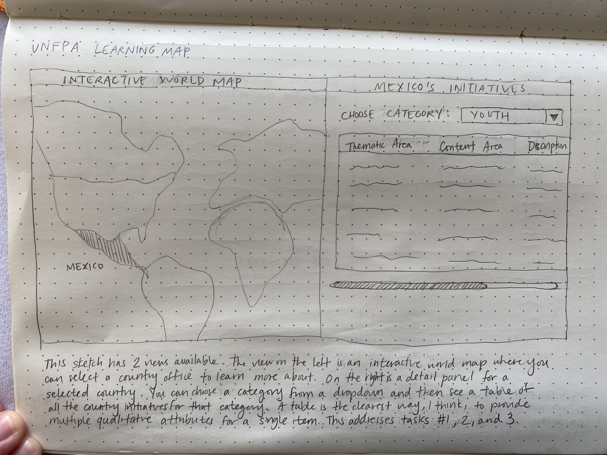
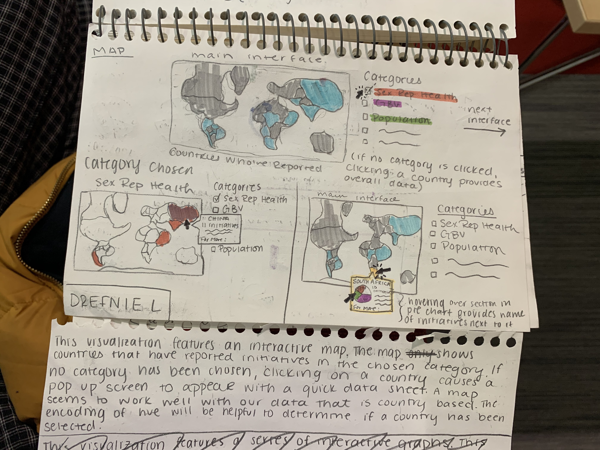
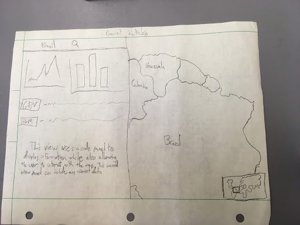
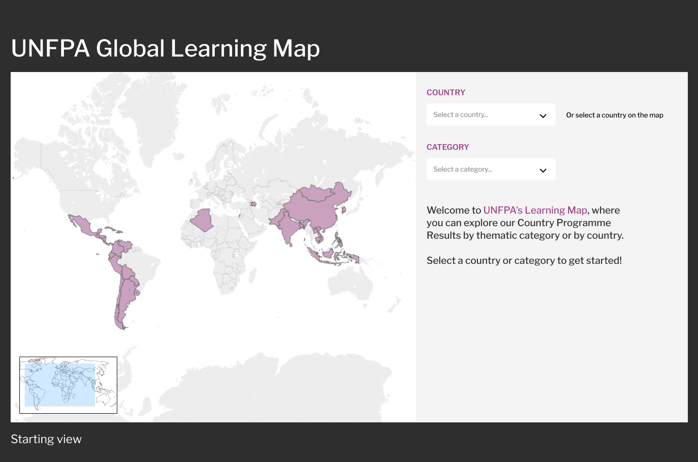
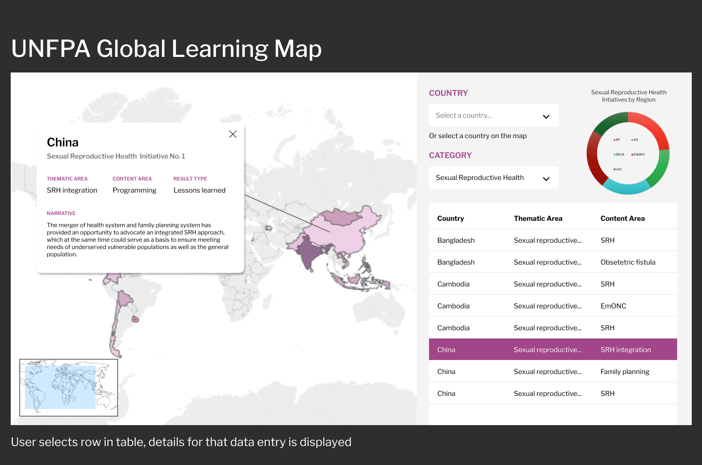
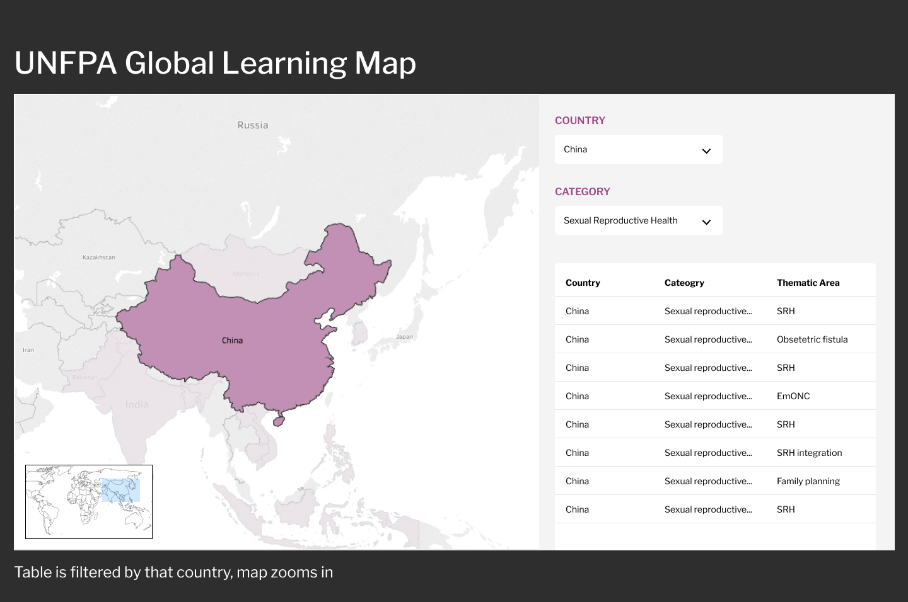

Caitlin Wang, Drefnie R. Limprevil, Emily Colladay, Garret Kutzko
Service-Learning Course Project as part of DS 4200: Information Presentation and Visualization, taught by Prof. Dylan Cashman, Data Visualization @ Khoury, Northeastern University.
For our project, we chose to create a learning map that educates users on 2019 UNFPA initiatives in each member country. We chose to focus on an interactive map visualization that allowed a user to explore initiatives by filtering the map by category and/or country. For our data, we needed a way to efectively show our mostly qualitative data in an interesting and engaging way. We also wanted to present a map that provided an overview of the progress made on UNFPA goals, while encouraging the user to explore details on different countries' initiatives. We aimed to reach this goal of exploration and learning in a format that was easy to understand and would be compelling to a wide range of users.
See the visualization on a standalone page here.
No results found.
Welcome to the UNFPA Learning Map, where you can explore our Country Programme Results by thematic category or by country.
Select a country or category to get started!
Initiative Details
Thematic Area
Thematic Area
Content Area
Content Area
Result Type
Result Type
Narrative
Narrative
The visualization is an interactive world map that has a linked modal table that provides the details of the data. The visualization presents two facets to the data: Category (of the types of initiative) and Country. Both of these can be selected directly with the dropdown filters, but there is also interaction in the visualization. By clicking on a country on the map, that country is zoomed in and outlined to provide feedback about the selection. The two halves of the visualization are linked, so changes in one are reflected in the other. We choose to use a map as our external partners requested it, and we used a table because the data is largely qualitative and resists quantitization. The map also serves as a heatmap of total counts of inititives for the selected category. Once the user has selected a point in the 2-dimensional Category-Country plane, they are free to move along either the Country or Category line to explore the data, which is a set of initiatives with some qualities. The tasks we chose to support were what we identified as the most important from our task analysis.
The data used in our visualization was collected from the various country offices of UNFPA and records advancements the offices have made in regards to the specific UNFPA strategic plan (SP) goals.The data has been put together in its current form by UNFPA’s data specialist, who determined which advancement falls into which SP goal best. The data is exclusively categorical and mostly non-numerical. To convert our data into a workable format we focused on the variables that involved the UNFPA member countries, initiative categories, or "Thematic Area Categories", and created a new variable that provided a count of the initiatives that fit under each category.
Our first and most crucial domain task was for the user to be able to view UNFPA initiatives by category. This task has the low-level task of identifying and comparing, the mid-level task of locating, and the high level task of consuming, or discovering. We do this by allowing our user to filter the map by choosing a category from the dropdown, giving them the option to select a country of interest on the map, and provding details to the intiatives for the country they have selected.
Similar to our first domain task, our second is to view initiatives by country. This task has the same low level and high level task as our first domain task, but has the mid-level task of browsing. The visualization achieves this by letting the user choose a country from the dropdown and see an overview of all of the UNFPA initiatives they have implemented in 2019.
Our third domain task is for our user to see the details of each country's initiatives, which allows the user to identify, locate, and consume our visulization, or see presented data. After the user chooses and selects a country of interest, the table that appears presents details for the reader to learn more about a certain country's initiatives.
Our final domain task is to provide further information on a specific UN initiative, which allows a user to identify, browse, and consume presented data in the visualization. After the reader has looked at the table with details on a country's initiatives, they will be provided with links to the UNFPA website to learn more about the organization's related resources on a particular intiative or initiative category.
Given our domain task analysis, we each hand sketched a few directions our visualization could go in. Below are some our early sketches that inspired our final design.
  Since our data has a substantial amount of qualitative information about multiple countries, we thought a map would be the best visualization for users to see an overview of how the UNFPA’s global offices are progressing on different family planning initiatives. These sketches also take advantage of filtering and multiple linked views in order to achieve our domain tasks.
Next, we synthesized our ideas from our hand sketches to a polished digital sketch. Below are some screenshots of the digital sketch we designed.
  The two major tasks we expected our users to have were the ability to view UNFPA initiatives by category and the ability to view those same initiatives by country. The way our design achieves this is with a two-panel layout, where the left-hand side has a map and the right-hand side is a table that displays our categorical data. We included two dropdowns to filter the data represented in the table and map.
At this point, we were prepared to begin implementation and broke up our visualization into a clear task to-do list.
After our first sprint, we shared our visualization with our peers for usability testing. We tested our completed features such as the category dropdown and our heat map/choropleth map. For the most part, our users found our visualization fairly easy to navigate. However, we also became aware of some areas of confusion with our users, such as the language and terms we were using along with our lack of a country selection indicator. Given this feedback, we tweaked our word choice, removed any unclear acronyms, and added a clear outline to selected countries.
Our project was a collaboration effort between an outside organization, UNFPA, and our class. Thus, we had regular communication with UNFPA's data team on what sort of visualization would be the most useful to them. This helped shape our project, but also set the expectations high. We used appropriate libraires that were allowed by the rubric for this class, but much of our end result was coded in basic Javascript. We were able to change the format to align with our drafts, creating a two-panel view with an interactive map and table with drop-down as well as click-prompted filters. Due to the time constraints, we were not able to make the end product as seamless and elegant as we would have liked, but we were able to present a simple yet effective visualization that UNFPA can use for its own purpose. For the future, additional search and filter options could be built in, as well as links that would lead the user to external sites.